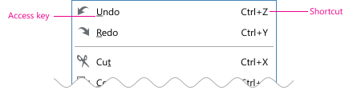
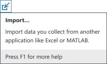

Menus provide the user access to commands for an application. Application menus typically contain global commands and shared commands (like Cut, Copy, Paste). Context menus provide a specific set of relevant commands for a particular context.
Application menu
The application menu is a collection of menu items contained within a menu bar along the top of the application window.
Codename: ApplicationMenu - NationalInstruments.Controls
Codename: ApplicationMenuItem - NationalInstruments.Controls
Basic usage
Menus are a collection of menu items. Menu items provide a single line of text to communicate the action that will be taken if selected. Other items like checkmarks, shortcuts and icons (rarely used) are also presented in a menu item.
In general, limit the menu hierarchy to two levels, the main level and one submenu level. Creating more levels makes the menu difficult to navigate. While in some cases, it is necessary to add an additional level it should be a rarity throughout the application.
If the menu item isn’t applicable disable the menu item instead of hiding the item.
Keep consistent naming in the menu. Avoid changing the text. For items that toggle on or off use a checkmark to indicate the current state. In very rare cases, an item doesn’t make sense without different phrasing. In this case, try rephrasing the command so that different text is unnecessary. As a last resort, use a “/” to combine the two states into a static string.
Application menu organization strategies
Organizing a menu system for an entire application can be a daunting task, but there are a few strategies that can help make this easier.
- If it is a common menu like File, Edit, View and Help, look at other software examples (internal and external) as many standard patterns exist.
- If the content is based on a workflow, like File, consider arranging items in the order of the workflow. Such as New, Open, Save, Close, Exit.
- Put more common tasks closer to the top and more advanced tasks closer to the bottom.
- Try to combine many single items into larger, logical groups. Avoid having numerous single item groups within a menu.
Context menus
A context menu is displayed to a user, typically by right-clicking, on a UI element in the application. They contain a small set of relevant commands for the target element.
Codename: ShellContextMenu - NationalInstruments.Controls.Shell
Basic usage
Commands provided in context menus should also be available in more visible parts of the application like the application menu, document toolbar or configuration pane.
Hide items in a context menu that aren’t relevant for the given context. Disable items that may not currently be functional but there is an expectation that they would be available. For example, while “Paste” may not be functional unless something exists on the user’s clipboard it is still displayed.
When possible, keep the number of items in context menus to 10 or less. Also try to keep the context menu to one level. Having numerous items or numerous levels reduces the efficiencies context menus are designed to provide.
It isn’t necessary to provide shortcuts in context menus. The application menu and tips displayed for other controls are more appropriate places for that information.
Icon usage in menus
In general, we do not use icons in application or context menus but there are a few exceptions.
Exceptions
- We do provide icons for file types and folders in the “New” menus
- Run, Pause, Abort in LabVIEW. The NI product you are working may have similar types of commands where it is also appropriate to use icons.
- We do provide icons for items that are standard and well known in general computing. The specific items that meet that criteria (using LabVIEW NXG as an example) are as follows:
- Cut
- Copy
- Paste
- Save
- Save all
- Undo
- Redo
Note: We have excluded “Close” due to multiple versions of Close that exists in LabVIEW NXG (Close, Close all, Close project, etc.) However, if your product has a simpler Close command, you may want to consider including that one, as well.
Access keys for menus
What’s the difference between an access key and a shortcut?
Shortcuts are keys or combination of keys used by advanced users to perform frequently used commands for efficiency. Shortcuts are not localized except when necessary for different keyboard layouts.
Access keys are keys or combination of keys used for accessibility to interact with menu items using the keyboard. Windows indicates access keys by underlining the access key. Windows hides access key underlines by default and shows them only when the user presses the Alt key. Unlike shortcut keys, access keys are not meant to be memorized. Access keys are localized.

Assigning access keys
Assign access keys to all menu items.
For dynamic menu items, such as recently opened files, assign access keys numerically. Access keys must be unique within the same menu level. You can reuse access keys across different menu levels.
For Windows applications, there are standard access keys used for command commands in Windows listed at Access keys on MSDN. Depending on the other access keys in the menu, you might not be able to use the standard assignment but check here first (especially if it’s a standard command).
Make access keys be easy to find by applying the following:
- Select characters near the beginning of the command especially for the most common commands.
- Prefer wide characters such as w, m, and capital letters.
- For less frequently used menu items, choose letters that are distinctive when speaking the word(s).
- Avoid characters that make the underline difficult to see, such as characters that:
- Are only one pixel wide, such as I, i, L.
- Have a descender (g, j, p, q, and y) .
- Are next to a character with a descender.
Using an ellipsis (…) in commands
Ellipses are used to inform the user there is more info required to perform the action. Basically, it means the command won’t immediately execute after clicking the menu item or button.
Use an ellipsis in a command name if the user is required to provide more information before the command executes.
It is not necessary to provide ellipses to a command just because another window is displayed. For example, if the command is to open a window, like Preferences, then an ellipsis is not necessary as the command has been executed. Also, for simple confirmation windows that ask the user if they are sure they want to proceed it is unnecessary to provide an ellipsis. Focus on situations where the application needs more information prior to executing the command.
Example use cases
| Case | Example | Ellipsis |
|---|---|---|
| Clicking a command requires some other action/information from the user | The “Save as…” command or a command that opens a wizard. | Yes |
| Clicking a command shows a dialog but doesn’t require interaction. | “Calculate dependencies” in the project dependencies document. Once the user clicks on this command, dependencies begin calculating but the user can cancel the operation. | No. The command immediately executes. While the user can perform another operation in the dialog that is displayed (Cancel), they are not required to in order for the command to execute….the command has already begun. |
| Clicking a command opens a window. | “Preferences” command in menu. “Data capture settings” in the menu. | No. The command is to open the dialog. That is performed immediately and does not require further information from the user. |
| Command requires confirmation | Deleting a file from the Project Files | No. Since this is just a simple confirmation to ensure the user wants to proceed, an ellipsis is unneccessary. |
Note: If an icon button (such as the “Import” button) requires additional action from the user, the infotip for that button should include an ellipsis.

Last updated on April 08, 2020